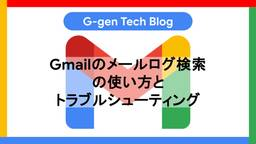
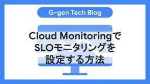
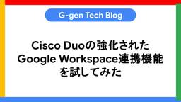
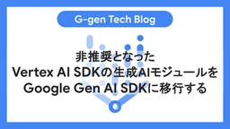
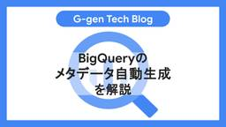

G-gen Tech Blog
https://blog.g-gen.co.jp/
Google Cloud(旧称GCP)の情報発信を行う技術ブログ
フィード

Gmailのメールログ検索の使い方とトラブルシューティング
G-gen Tech Blog
G-gen の中川です。Google Workspace の管理者向け機能であるメールログ検索について、基本的な使い方からトラブルシューティングでの活用方法までを解説します。 メールログ検索とは 保持期間 使用方法 メールログ検索でできること 配信状況と配信後の状態の確認 メッセージ ID での正確な追跡 適用されたルールの特定 トラブルシューティングでの利用 ケース1 : ログに記録が存在しない ケース2 : 外部への送信が拒否された メールログ検索とは メールログ検索（Email Log Search、ELS）は、Google Workspace の管理者が、組織で送受信されるメールの配信…
2日前

Cloud MonitoringでSLOモニタリングを設定する方法 1
1
G-gen Tech Blog
G-genの福井です。Cloud Monitoring の SLO モニタリングの設定手順を紹介します。 はじめに SLO 設定の前提 Service の作成 SLO の作成 可用性 SLO の設定 レイテンシ SLO の設定 エラーバジェットのアラート設定 アラート設定の必要性 エラーバジェットのアラートの種類 アラートポリシーの作成手順 ダッシュボードの確認 はじめに 本記事では、Google Cloud の Cloud Monitoring を利用し、サービスの品質を定量的に管理するための SLO モニタリングを設定する手順を解説します。 サービス運用では、「システムの現在の状態は健全か…
3日前

Cisco Duoの強化されたGoogle Workspace連携機能を試してみた
G-gen Tech Blog
全国の G-gen ファンのみなさま、はじめまして。Cisco Systems のセキュリティ SE の稲澤です。今回、G-gen の Google Workspace 検証環境を使い、当社の Cisco Duo との連携テストを行う機会を得たため、内容を記事にまとめました。 当記事は、Cisco Systems と G-gen の共同企画で執筆されました。 はじめに Cisco Duo とは Duo と Google Workspace の連携 検証1. Google Directory-Sync 検証2. Duo Directory ＆ 完全なパスワードレス認証 検証3. Duo Outb…
4日前

非推奨となったVertex AI SDKの生成AIモジュールをGoogle Gen AI SDKに移行する
G-gen Tech Blog
G-gen の堂原です。本記事では、Vertex AI SDK と Google Gen AI SDK のコードを比較しながら、Gemini の基本的な機能を Google Gen AI SDK で呼び出す方法を紹介します。 はじめに セットアップ Vertex AI SDK Google Gen AI SDK テキスト生成 Vertex AI SDK Google Gen AI SDK チャット形式 Vertex AI SDK Google Gen AI SDK マルチモーダル Vertex AI SDK Google Gen AI SDK グラウンディング Vertex AI SDK Go…
5日前

BigQueryのメタデータ自動生成を解説
1
G-gen Tech Blog
G-genの杉村です。BigQuery テーブルのデータをスキャンして、AI がテーブルのメタデータ（テーブルとカラムの説明）を自動生成するメタデータ自動生成機能を解説します。 はじめに テーブルのメタデータとは メタデータの自動生成 仕様 分析情報からのメタデータ自動生成 料金 制限事項 手順 データ分析情報の生成 生成された説明を確認 テーブルへの保存 結果 はじめに テーブルのメタデータとは データ分析基盤において、メタデータは非常に重要です。メタデータは可視化や分析のために必要なデータを人間が検索するために必要なほか、AI エージェントが自律的にデータを探し出したり、解釈するためにも利…
6日前

GeminiとGoogle Workspaceを連携する方法
G-gen Tech Blog
G-gen の横澤です。Gemini アプリの Google Workspace Apps を利用することで、Gemini アプリを Google カレンダーや Google ToDo リストと連携し、業務効率を高めることができます。 概要 Google Workspace Apps とは 有効化方法 Google カレンダーとの連携でできること 予定の検索・取得 予定の追加 時間の分析 Google ToDo リストとの連携でできること タスクの検索 タスクの追加 タスクの消化率の分析 Gems × Google Workspace Apps 概要 Google Workspace Apps…
9日前
Compute Engine VMのgce_workload_cert_refreshプロセスで404エラー
G-gen Tech Blog
G-gen の高井（Peacock）です。Compute Engine (GCE) VM に Ops エージェントのインストールを試みた際、gce_workload_cert_refresh というプロセスから HTTP 404 エラーがログに出力され Ops エージェントのインストールが失敗する事象について、その原因と対処法を解説します。本記事ではまず Ops エージェントについて簡単に触れ、その後に具体的なエラーと対処法を説明します。 Ops エージェントとは 事象 原因 対処法 Ops エージェントとは Ops エージェント（Ops Agent）は、Compute Engine インスタ…
10日前
メダリオンアーキテクチャ2.0とGoogle CloudのAIエージェント活用
G-gen Tech Blog
G-genの杉村です。当記事では、AI エージェント時代に対応する次世代データ基盤アーキテクチャとして「メダリオンアーキテクチャ 2.0」と、その中核をなす「プラチナレイヤー」をGoogle Cloudで実現する方法を解説します。 はじめに 概要 メダリオンアーキテクチャとは AI エージェント時代のメダリオンアーキテクチャ アーキテクチャ メダリオンアーキテクチャ（従来） メダリオンアーキテクチャ 2.0 実装 プラチナレイヤー セマンティックレイヤー ナレッジグラフ マルチモーダルデータ 追加インターフェイス リアルタイムデータ 情報のシェア・販売 ガバナンス補強 メタデータ管理 データリ…
11日前
Google CloudのMarketplace Channel Private Offer（MCPO）を解説
G-gen Tech Blog
G-gen の向井です。当記事では、Google Cloud Marketplace のサードパーティ製ソフトウェアを、G-gen のような販売パートナー経由で購入できる Marketplace Channel Private Offer（MCPO）を解説します。 Google Cloud Marketplace とは プライベートな購入方法 プライベートオファーとは Marketplace Channel Private Offer とは 得られるメリット 請求の一元化 ディスカウント 付加価値 柔軟な契約 プロセス MCPO のプロセス オファーの承諾手順 Google Cloud Mar…
12日前
Looker Studioでフィルタを適用したレポートを共有する方法
G-gen Tech Blog
G-genの min です。Looker Studio には、フィルタや期間などを適用した特定の表示状態を URL として保存・共有する機能があります。本記事では、特定の表示状態を保存・共有するための「レポートの現在のビューにリンクする」と「カスタム ブックマーク リンク」という2つの機能について、設定方法から利用例まで解説します。 概要 レポートの現在のビューにリンクする（手動生成） 概要 設定方法 カスタム ブックマーク リンク（自動更新） 概要 設定方法 カスタム ブックマーク リンクの応用 URL パラメータの構文 レポート間のドリルスルー 注意事項 概要 用途に応じて以下の2種類の方…
13日前
Looker Studioの「レポートの公開設定」でバージョンを管理する方法
G-gen Tech Blog
G-gen の min です。Looker Studio のレポートの公開設定は、レポートに加えた変更が閲覧者に表示されるタイミングを制御する機能です。この機能を利用して、レポートのバージョンを管理する方法を解説します。 概要 使用方法 公開設定を有効にする 変更内容を公開する 下書き版と公開版を切り替えて表示する バージョンの仕組み バージョン履歴との連携 レポートコピー時の挙動 概要 レポート作成時、デフォルトの状態では、編集者がレポートに加えた変更はほぼリアルタイムで閲覧者にも表示されます。これは個人での利用には便利ですが、複数人での共同編集を行う場合、編集中途の不完全なレポートが閲覧者…
16日前
Cloud Run worker poolsを徹底解説！
G-gen Tech Blog
G-gen の佐々木です。当記事では、Google Cloud のサーバーレス コンテナサービスである Cloud Run の機能の一つ、Cloud Run worker pools について解説します。 注意点 Cloud Run worker pools とは 概要 ユースケース Cloud Run services と共通の仕様 リビジョン単位の管理 CPU、メモリ容量の制限 ボリュームマウント機能 VPC へのプライベート接続 サイドカーコンテナの使用 pull 型の実行モデル スケーリング ワーカープールのデプロイ 料金 注意点 当記事の内容は、2025年7月3日現在パブリックプレビ…
17日前
Looker StudioとBigQuery連携で予想外のコスト増加の原因となる2つの挙動
G-gen Tech Blog
G-gen の min です。Looker Studio から BigQuery をデータソースとして利用する際、意図しない挙動により BigQuery の利用料金が高額になるケースがあります。本記事では、特に CURRENT_DATE() のような非決定性関数を使用した場合のキャッシュの扱いや、プルダウンリストのコントロールによるクエリ発行時に注意が必要な挙動がありました。その共有と対策を解説します。 コスト増の原因になる挙動 1. CURRENT_DATE() 使用によるキャッシュ無効化 2. プルダウンリストのコントロールによるクエリ増加 具体的な対策 対策 1-1 : 非決定性関数の除…
18日前
2025年6月のイチオシGoogle Cloudアップデート
G-gen Tech Blog
G-gen の杉村です。2025年6月のイチオシ Google Cloud（旧称 GCP）アップデートをまとめてご紹介します。記載は全て、記事公開当時のものですのでご留意ください。 はじめに Pub/Sub に Single Message Transforms（SMTs）機能が登場 BigQuery へのロード時に日付形式、タイムゾーンが指定可能に Google Workspace（Gmail） Googleドライブで "Catch me up" 機能が追加 Gemini アプリで GitHub リポジトリをインポート可能に Gemini 2.5 Pro の最新プレビュー版が利用可能に Or…
19日前
Gemini CLIを解説
G-gen Tech Blog
G-genの杉村です。Google が公開するオープンソースの AI エージェント Gemini CLI について解説します。 概要 Gemini CLI とは 料金 初期設定 インストール 認証 Cloud Shell での利用 リモートサーバー等での利用 使い方 対話型実行 非対話型実行 プロジェクトごとのコンテキスト設定 Gemini Code Assist との連携（エージェントモード） プライバシーポリシーとデータ保護 Gemini モデルに関するデータ保護 Gemini CLI の統計情報 概要 Gemini CLI とは Gemini CLI とは、ターミナルから直接 Gemin…
20日前
異なるリージョンのBigQuery MLリモートモデルでデータを処理するパイプラインを実装してみた
G-gen Tech Blog
G-gen の堂原です。本記事では Google Cloud（旧称 GCP）の BigQuery において、データセットとリモートモデルが異なるリージョンに存在する場合の、AI データ処理パイプラインを紹介します。 はじめに 本記事の趣旨 ML.GENERATE_TEXT 関数と Gemini 2.0 の対応リージョン 概要 今回用いるデータ テーブル構成と処理概要 留意点 実装 1. us-central1 へ転送するデータ抽出 2. データセット「tokyo_from_tokyo_to_us」のテーブルをデータセット「us」にコピー 3. リモートモデル「gemini-model-20-f…
23日前
Cloud RunからCloud SQLへセキュアに接続してみた
G-gen Tech Blog
G-genの福井です。Cloud Run から Cloud SQL に対し、内部通信と IAM データベース認証を使用してセキュアに接続する手順を紹介します。 はじめに 当記事の概要 内部通信での接続 IAM データベース認証 事前準備 API の有効化 環境変数の設定 環境構築 ネットワーク環境の構築 Cloud SQL インスタンスの作成 アプリケーションの準備 ディレクトリ構成 アプリケーションソース Cloud Run へのデプロイ サービスアカウントの作成と権限付与 Cloud SQL ユーザーとしてのサービスアカウント登録 Cloud Run にデプロイ 動作確認 はじめに 当記事…
24日前
Google Workspaceのライセンス自動割り当て設定と注意点
G-gen Tech Blog
G-gen の岡田です。当記事では、Google Workspace ライセンスの自動割り当ての設定方法と注意点についてご紹介します。 はじめに Google Workspace ユーザーとライセンスの割り当て ライセンスの自動割り当てとは 手動でのライセンス割り当て ライセンスの自動割り当ての設定手順 自動割り当ての注意点 はじめに Google Workspace ユーザーとライセンスの割り当て Google Workspace でユーザー（アカウント）作成した後のライセンス割り当ては、管理コンソールの設定で自動化することができます。 当記事では、ライセンスの自動割り当ての設定方法と注意点…
25日前
Cloud Run Worker Poolsを使ってみた
G-gen Tech Blog
G-gen の佐々木です。当記事では、Cloud Run の新しい実行モデルである Cloud Run Worker Pools を、実際に使ってみます。 注意 : 当記事の内容について はじめに Cloud Run Worker Pools とは 想定ユースケース 当記事の構成 Pub/Sub の作成 Cloud Run Worker Pools の作成 使用するコード（Go） コンテナイメージの作成 Cloud Run Worker Pools のデプロイ コンソールから確認 動作確認 注意 : 当記事の内容について 当記事の内容は、2025年6月26日現在パブリックプレビュー版のサービス…
1ヶ月前
GoogleカレンダーとGoogle ToDoリストを活用した業務効率化のすすめ
G-gen Tech Blog
G-gen の横澤です。本記事では、Google Workspace の標準機能である Google カレンダーと Google ToDo リストの概要、および連携による業務効率向上のための設定方法や利用例を解説します。 Google カレンダー Google カレンダーとは 活用術 1 : 業務時間と勤務場所の設定 活用術 2 : 業務時間分析 Google ToDo リスト Google ToDo リストとは 活用術 1 : タスクの整理 活用術 2 : 定期的なタスクの登録 活用術 3：他サービスとの連携 活用術 4 : タスク管理の Tips Google カレンダーと Google …
1ヶ月前
AppSheet CoreとEnterprise Plusの違い
G-gen Tech Blog
G-gen の松本です。この記事では Google Workspace の AppSheet Core と AppSheet Enterprise Plus の違いについて解説します。 概要 AppSheet とは AppSheet のサブスクリプションプラン AppSheet Core Google Workspace に無料付帯 テンプレートから簡単にアプリ作成 Google Workspace アプリとの連携 管理コンソールでの制御 AppSheet Enterprise Plus 最上位プラン Google グループを利用したユーザーのアクセス制御 多様なデータソースとの連携 OCR …
1ヶ月前
Cloud Loggingのクエリ言語の構文を徹底解説
G-gen Tech Blog
G-gen の杉村です。Google Cloud のログ収集、保管、閲覧サービスである Cloud Logging のクエリ言語を徹底解説します。 クエリ言語 Logging クエリ言語とは クエリ言語のその他の用途 基本的な使い方 クエリの仕方 例文 ログエクスプローラでの生成 ブール演算子 AND、OR 括弧 NOT 比較演算子 =、!=（equal、not equal） :（has） フィールドの存在確認 正規表現 =~、!~（正規表現） 正規表現の記述 検索のスピード 文字列の検索 グローバル制限（単純な検索） SEARCH 関数 時間の指定 ログエクスプローラでの指定 クエリ言語での…
1ヶ月前
Vertex AI経由でClaudeモデルを使ってみた
G-gen Tech Blog
G-gen のバロキです。この記事では Vertex AI を使って、Anthropic 社の Claude モデル を呼び出す方法と、セットアップから最初の推論（inference）までのステップについて解説します。 はじめに Claude とは Vertex AI 上で Claude を使うメリット 利用可能な Claude モデル一覧 事前準備 Notebook インスタンスの作成 Claude のストリーミング応答を利用する curl での呼び出し例 次のステップ はじめに Claude とは Claude は、Anthropic 社によって開発された大規模言語モデル（LLM）のファミ…
1ヶ月前
BigQueryからCloud StorageのCSVを読み込む際に日付列がUnable to parse
G-gen Tech Blog
G-gen の杉村です。BigQuery では、Cloud Storage 上の CSV 形式や JSON 形式のファイルをテーブルに読み込ん（ロード）だり、外部テーブル定義によって直接クエリすることができます。日付を含むファイルをロードしたりクエリしようとした際に発生したエラーについて、対処法を解説します。 前提 事象 1. LOAD の際のエラー 2. 外部テーブルへのクエリの際のエラー 原因 対処法 1. date_format オプションを指定する 2. STRING 型として取り込む 3. スキーマの自動検知を利用する 4. 取り込む前にファイルを前処理する 前提 Cloud Sto…
1ヶ月前
BigQuery Data Transfer Serviceでイベントドリブンにデータを取り込む方法
G-gen Tech Blog
G-genの福井です。BigQuery Data Transfer Service のイベントドリブン機能の設定手順を紹介します。 イベントドリブン転送の概要 BigQuery Data Transfer Service とは ユースケース アーキテクチャ 制限事項 料金 事前準備 API の有効化 サービスアカウントの作成とロールを付与 設定手順 データの格納先をCloud Storageに作成 データの転送先をBigQueryに作成 BigQuery Data Transfer Serviceで転送構成を作成 動作確認 イベントドリブン転送の概要 BigQuery Data Transfe…
1ヶ月前
外部ドメインのGmailグループアドレスを送信元としてメールを送信する方法
G-gen Tech Blog
G-gen の中川です。本記事では、Google Workspace ユーザーが他のドメインの Google Workspace グループアドレスを送信元としてメールを送信するための、設定手順を解説します。 はじめに 事前準備 Google グループの作成 別組織のユーザーの Google アカウントの設定 別組織のユーザーの Gmail の設定 グループメンバーによる確認 メール送信時の差出人設定 はじめに 別組織のユーザーが Google Workspace グループアドレスを送信元としてメールを送信したいという要件があります。例えば、外部の協力会社のユーザーが、自分たちのドメインとは異な…
1ヶ月前
NotebookLM無償版・Pro・Enterpriseの違い
G-gen Tech Blog
G-genの杉村です。Google の AI を活用したリサーチ・ライティングアシスタントである NotebookLM の各エディション（無償版、Pro 版、Enterprise 版）の違いについて詳しく解説します。 NotebookLM とは NotebookLM のエディション エディションの比較 どのエディションを選ぶべきか その他の注意点 ノートブックの共有可否 アクセス URL NotebookLM とは NotebookLM は、ユーザーがアップロードしたドキュメントやデータ（ソース）に基づいて、AI が質問応答、要約、アイデア生成などを行うリサーチ・ライティングアシスタントです。…
1ヶ月前
NotebookLMのマインドマップ機能を試してみた
G-gen Tech Blog
G-gen の川村です。この記事では NotebookLM のマインドマップ機能の活用方法を解説します。 NotebookLM とは マインドマップ機能とは 事前準備 ソースの追加 マインドマップの使い方 マインドマップ生成 操作方法 共有 活用シーン 1. 複雑な情報や大量の資料の全体像把握 2. 投影資料活用 3. 情報整理・可視化 4. 会議のネクストアクション整理 5. アイデア発想とブレインストーミングの促進 注意点 NotebookLM とは NotebookLM とは、Google ドキュメント、PDF、音声、YouTube 動画などをソースとして指定し、その情報を基に要約・FA…
1ヶ月前
Looker Studioで閲覧者メールアドレスに基づき表示データを動的に制限
G-gen Tech Blog
G-gen の min です。Looker Studio レポートに表示するデータを、閲覧者のメールアドレスに基づいて動的に制限する方法を解説します。 概要 設定方法 検証 データソースへのアクセスを許可した場合 データソースへのアクセスを許可しない場合 概要 Looker Studio で作成したレポートを複数のユーザーで共有する際に、同じレポートでありながら、閲覧するユーザーのメールアドレスに応じて表示されるデータを出し分けたいという要件があります。例えば、営業担当者ごとに自身の売上データのみを表示する、といったケースです。 Looker Studio では、データソースに「メールアドレス…
1ヶ月前
Chrome Enterprise Premiumでブラウザのセキュリティを強化してみた
G-gen Tech Blog
G-gen の三浦です。当記事では、Chrome Enterprise Premium を利用して Web ブラウザのセキュリティを強化する方法を紹介します。 概要 Chrome Enterprise Premium とは Core と Premium 検証手順 URL フィルタリングの検証 設定手順 動作確認 DLP の検証 設定手順 動作確認 概要 Chrome Enterprise Premium とは Chrome Enterprise Premium（旧称 BeyondCorp Enterprise）は、Google が提供する Chrome ブラウザのセキュリティを強化するサービス…
1ヶ月前